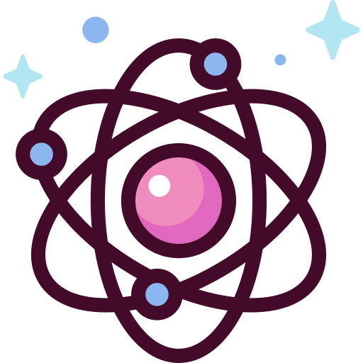
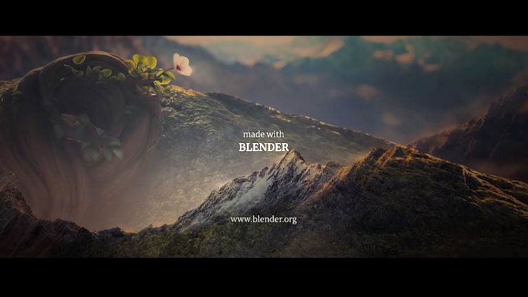
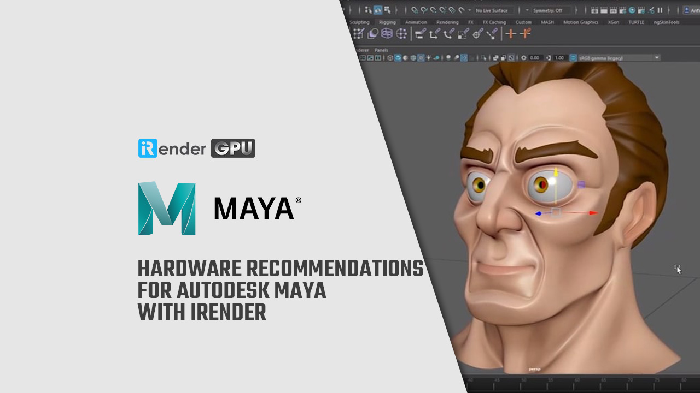
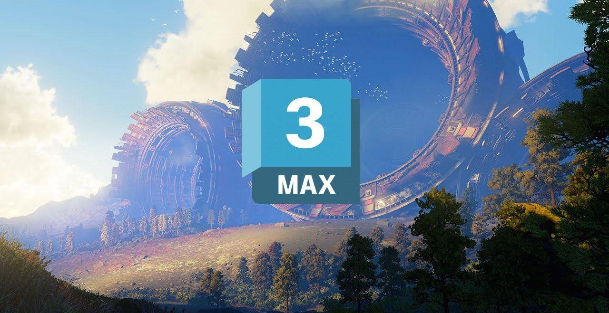

3D Graphics
Вибираючи середу для тривимірного моделювання, в першу чергу,
слід визначити коло завдань, для вирішення яких вона
підходить.

Додатково використовують програмне забезпечення для «вузьких»
задач: наприклад, розробки окремих деталей, а також професійні
колекції типових образів і форм.
Популярні програми для розробки 3D моделей
Cinema 4D
Cinema 4D або скорочено C4D – це професійне програмне
рішення для 3D-моделювання, анімації, симуляції та
рендерингу. Швидкий, потужний, гнучкий та стабільний набір
інструментів робить робочі процеси 3D доступними та
ефективними для дизайну, моушн-графіки, візуальних ефектів,
AR/MR/VR та розробки ігор. Cinema 4D дає чудові результати,
незалежно від того, чи працюєте ви поодинці або в команді.

Blender
Blender — об'єктно-орієнтована програма для створення
тривимірної комп'ютерної графіки. Це не тільки моделювання,
але і анімація, рендерінг, створення ігор, обробка
відеоматеріалів. Характерними особливостями пакету Blender є
його невеликий розмір та підтримка багатьох популярних
операційних систем. Він підтримує роботу з багатьма
геометричними примітивами — базовими полігональними моделями
(куб, сфера, циліндр тощо), кривими Безьє, поверхнями NURBS,
metaballs, векторними шрифтами. Шляхом їх перетину та зміни
розташування й розмірів окремих полігонів створюються всі
інші, складніші, об'єкти.



Autodesk Maya
Maya – це редактор для роботи з тривімірною графікою, який
доступний для операційних систем Windows, macOS і Linux. З
2013 року редактор випускається тільки для 64-бітових
систем. Maya має широкий функціональні можливості для
3D-анімації, моделювання, візуалізації та створення
персонажів. В даний час редактор є стандартом для 3D
графіки, телебачення, кіно та розробки ігор. Коли заходить
мова про настройку ключових кадрів і використанні кривих,
більшість спеціалістів віддають перевагу саме редактору
Maya.


3ds Max
3ds Max - програма, яка дозволяє створювати користувацькі
інструменти, підвищити ефективність спільної роботи
проектних груп і прискорити робочі процеси. Настроюваний
додаток 3ds Max із підтримкою спільної роботи дозволяє
прискорити створення реалістичних персонажів та обстановки в
3D. Система для створення і редагування об'єктів та
створення візуалізацій.